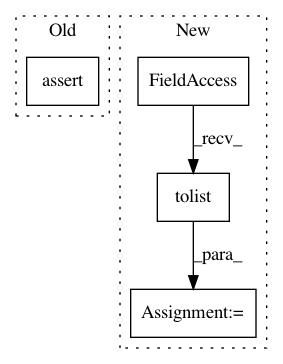

51a0c5fbe8e236cdb7e58afce66d7639d8fe9a45,tensorflow_transform/saved/input_fn_maker_test.py,InputFnMakerTest,_test_build_parsing_transforming_serving_input_fn,#InputFnMakerTest#Any#,269
Before Change
[outputs["transformed_a"], outputs["transformed_b"]],
feed_dict=feed_inputs)
with self.assertRaises(Exception):
session.run(outputs["transformed_label"])
self.assertEqual(21, transformed_a[0][0])
After Change
for x in transformed_b.indices.tolist()],
transformed_b.values.tolist()))
else:
transformed_b_dict = dict(zip([tuple(x)
for x in transformed_b.indices.tolist()],
transformed_b.values.tolist()))
self.assertEqual(batch_shape, tuple(transformed_a.shape))
self.assertEqual(sparse_batch_shape, tuple(transformed_b.dense_shape))
In pattern: SUPERPATTERN
Frequency: 4
Non-data size: 4
Instances
Project Name: tensorflow/transform
Commit Name: 51a0c5fbe8e236cdb7e58afce66d7639d8fe9a45
Time: 2017-10-20
Author: tf-transform-dev@google.com
File Name: tensorflow_transform/saved/input_fn_maker_test.py
Class Name: InputFnMakerTest
Method Name: _test_build_parsing_transforming_serving_input_fn
Project Name: rusty1s/pytorch_geometric
Commit Name: a5ad5689db46c71cdc2e635f155bf3bc171b2803
Time: 2018-05-13
Author: matthias.fey@tu-dortmund.de
File Name: test/transform/test_target_indegree.py
Class Name:
Method Name: test_target_indegree
Project Name: rusty1s/pytorch_geometric
Commit Name: a5ad5689db46c71cdc2e635f155bf3bc171b2803
Time: 2018-05-13
Author: matthias.fey@tu-dortmund.de
File Name: test/transform/test_cartesian.py
Class Name:
Method Name: test_cartesian
Project Name: rusty1s/pytorch_geometric
Commit Name: a5ad5689db46c71cdc2e635f155bf3bc171b2803
Time: 2018-05-13
Author: matthias.fey@tu-dortmund.de
File Name: test/transform/test_local_cartesian.py
Class Name:
Method Name: test_local_cartesian